progetti_abact/
Lavori sviluppati durante il triennio in Design della Comunicazione Visiva: progetti editoriali, tipografici e digitali.
Progetto in team. È stato progettato e scritto un sito web di tipo informativo allo scopo di far conoscere l'universo della birra, la sua storia, la sua produzione e il suo prestigio mondiale.
Visita il sito ↗- Membri del progetto
- Daniele Laudani (design)
Mattia Leocata (css/javascript)
Alessio Palermo (html/css)
Daniel Perricone (design)
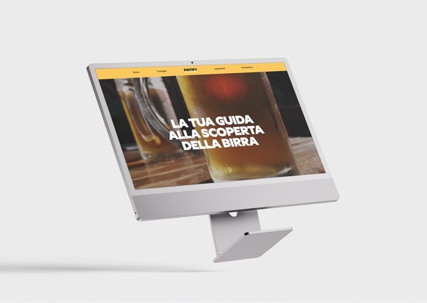
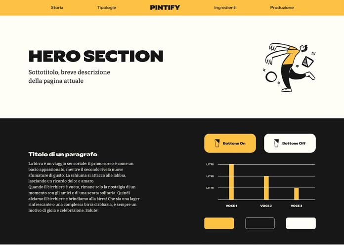
Progettazione di 3 copertine. Le prime due copertine fanno parte di una collana editoriale, mantenendo infatti la stessa grammatica visiva, la terza copertina è progettata per un fuori collana.
- Formato copertina
- 10 x 15 cm
- Largh. bandelle
- 7 cm
- Largh. costa
- 1,5 cm
- Tipografia collana
- League Spartan
- Tipografia fuori collana
- Gazzetta
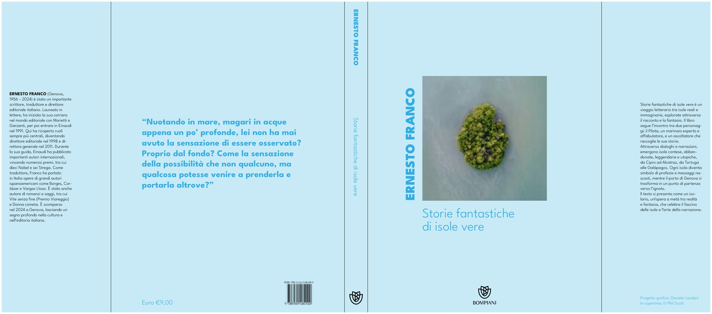
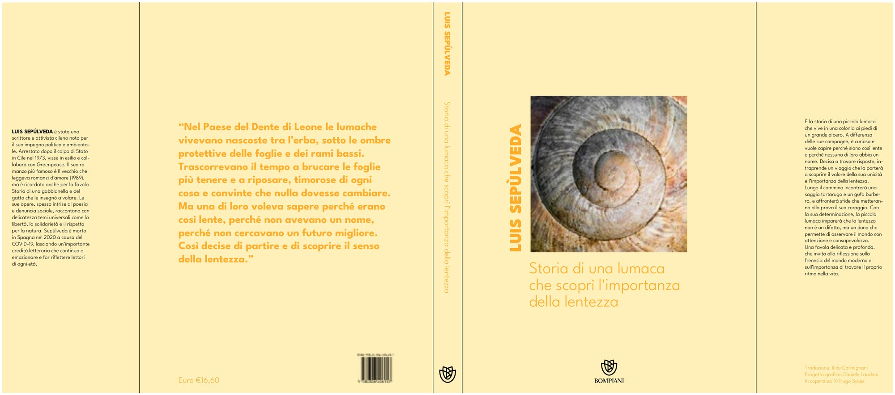
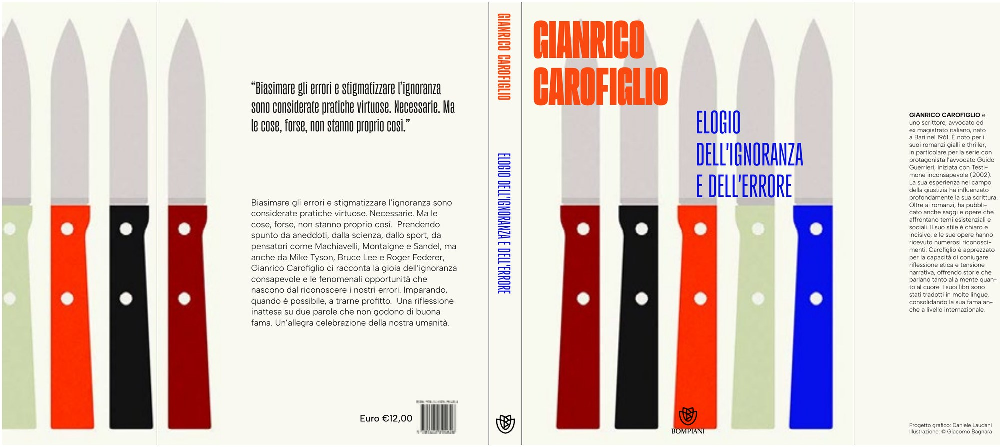
È stato chiesto di trasformare un ritratto fotografico in un simbolo/pittogramma. Il progetto riprende un esercizio di Bruno Munari — Variazioni sul tema del viso umano (1964).
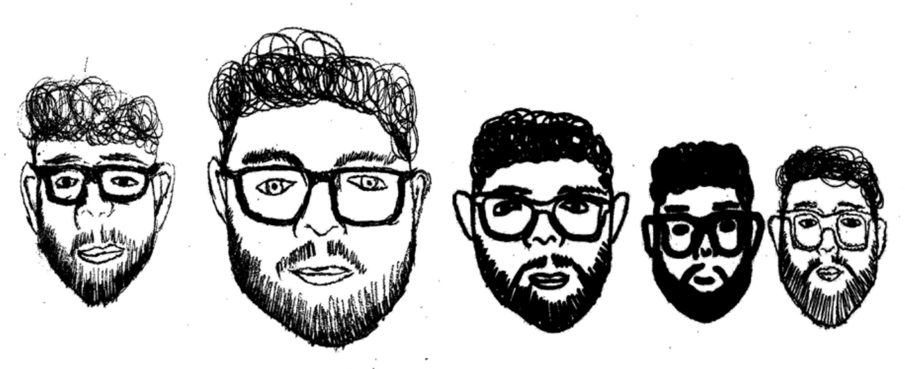
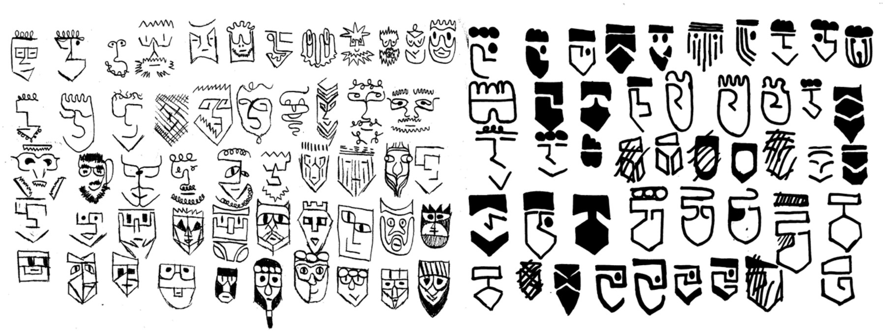
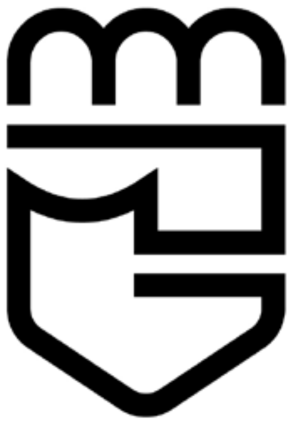
Trittico di manifesti realizzati in occasione del centenario dalla nascita di Davis. I manifesti tipografici traducono in linguaggio visivo i suoi insegnamenti e la sua eredità lasciata alla musica.
- Formato
- 70 x 100 cm
- Tipografia
- Big Shoulders Display
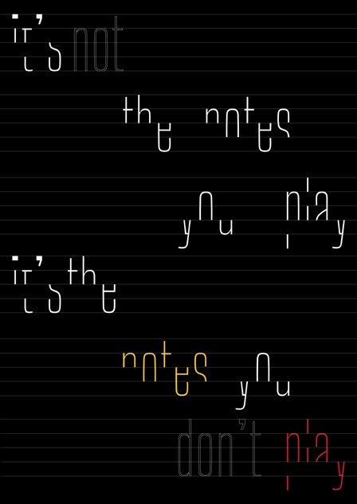
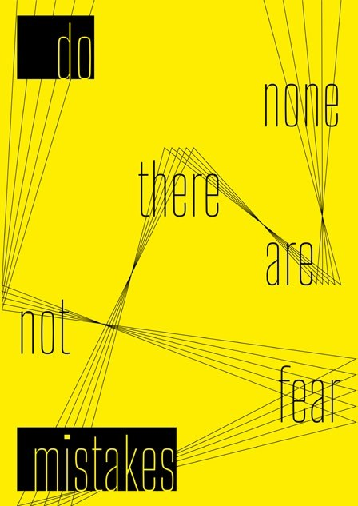
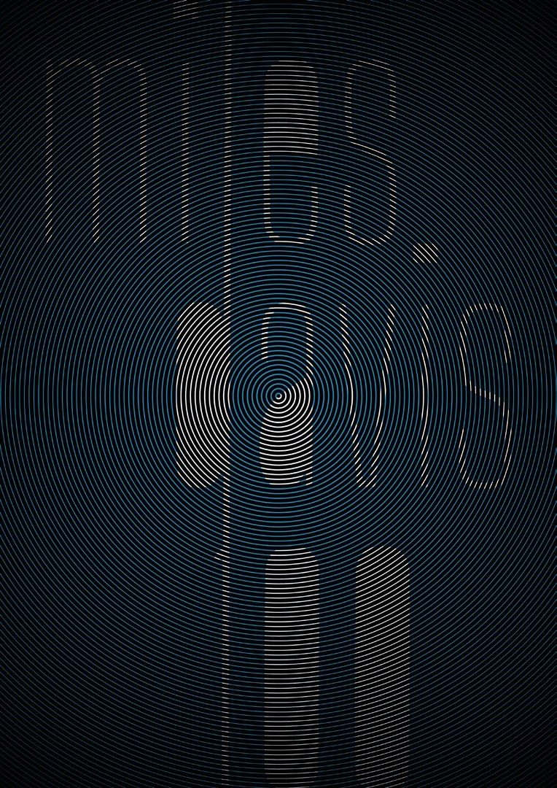
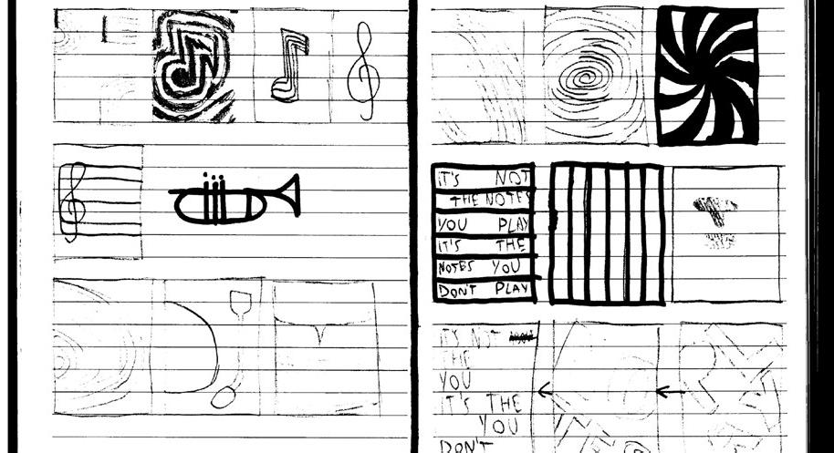
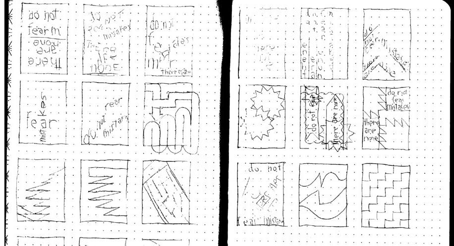
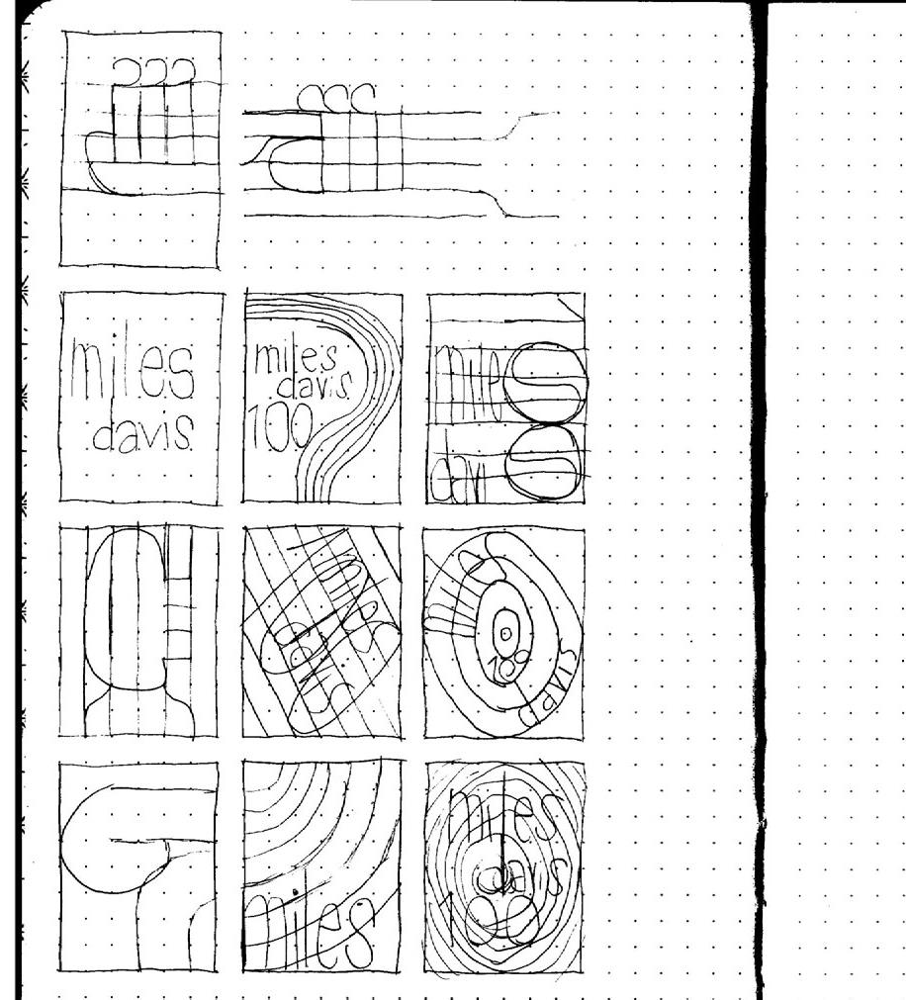
Un pamphlet di 32 pagine che analizza e racconta due proposte di Marchio per Ford e mette in luce come anche in un progetto apparentemente perfetto, il fallimento possa sempre nascondersi dietro l'angolo.
- Formato
- A5 (148x210mm)
- N° pagine
- 32 pagine
- Rilegatura
- Punto metallico
- Tipologia carta
- Patinata opaca 150g/m3
- Stampato a
- Giugno, 2026
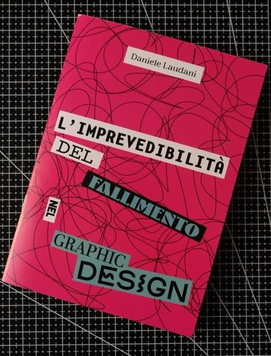
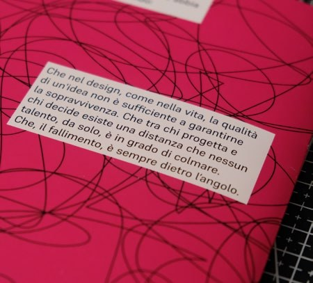
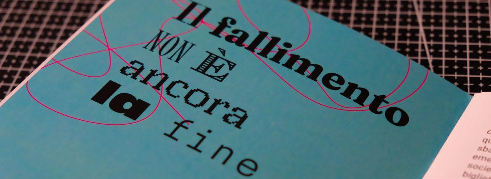